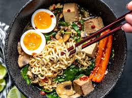

Gourmet Instant Ramen
This is the perfect midnight snack that doesn't take much prep at all
This is my favorite snack late on a weekend night
Servings:
1Ingredients:
- 1 Pack of Instant Ramen of your choosing
- 2 Green Onions
- 3 slices of Kamaboko
- Togarashi to taste
Directions:
- Follow cooking instructions of the Ramen
- Slice green onions
- Slice Kamaboko (3-4 slices)
- Add green onions and sliced Kamaboko to Ramen
- add togarashi to ideal spice levels